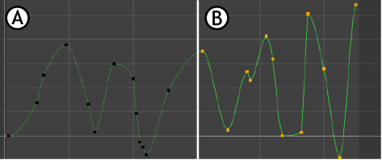

您可以编辑父场景引用的动画曲线。编辑操作包括添加、删除和移动关键帧以及更改切线类型。
编辑引用的动画曲线
- 在“文件引用”(File References)首选项中，启用“允许编辑引用的动画曲线”(Allow Referenced Animation Curves to be Edited)首选项（在“动画首选项”(Animation Preferences)的“引用的动画曲线”(Referenced Animation Curves)部分中）。
启用该首选项后，您可以按照与编辑任何其他曲线相同的方式来编辑引用的曲线。注： 引用动画曲线时，此曲线会暗显（原始曲线颜色的 40%）并带有黑色锁定关键帧。
“曲线图编辑器”(Graph Editor)中的动画曲线：A. 引用、已锁定，B. 引用、未锁定
- 编辑引用的曲线。
在编辑引用的曲线（例如添加、移动或删除关键帧，或者更改切线和切线类型）时，所有编辑操作都将存储在文件中的引用节点中，并可以将其导出为 .editMB 或 .editMA 引用编辑文件。可以将该文件指定给另一个场景以传播引用编辑。请参见将引用编辑导出到脱机文件和将引用编辑指定给脱机文件。
- 在保存引用编辑之前，可以在“引用编辑”(Reference Edits)窗口中查看和删除编辑。
若要打开“引用编辑”(Reference Edits)窗口，请在“大纲视图”(Outliner)中的引用节点上单击鼠标右键，然后选择。请参见移除引用编辑。
当您在“曲线图编辑器”(Graph Editor)中修改引用的动画曲线时，也可以使用“缓冲区曲线”(Buffer Curve)选项比较引用的曲线和结果动画。
编辑引用曲线时查看或交换引用的动画和结果动画
- 在编辑引用曲线之前，请在“曲线图编辑器”(Graph Editor)中选择它。
- 从菜单栏中选择。
这会拍摄被引用曲线的快照，并将其显示在图表视图区域中。
- 编辑引用曲线，使用缓冲区引用曲线作为原始被引用曲线形状的可视提醒。
（可选）若要将编辑的引用曲线交换回原始引用曲线，请执行下列操作之一：
- 从菜单栏中选择。
- 单击工具栏中的“交换缓冲区曲线”(Swap Buffer Curve)
 。
提示： 如果在工具栏中看不到“交换缓冲区曲线”(Swap Buffer Curve)图标，请打开。
。
提示： 如果在工具栏中看不到“交换缓冲区曲线”(Swap Buffer Curve)图标，请打开。